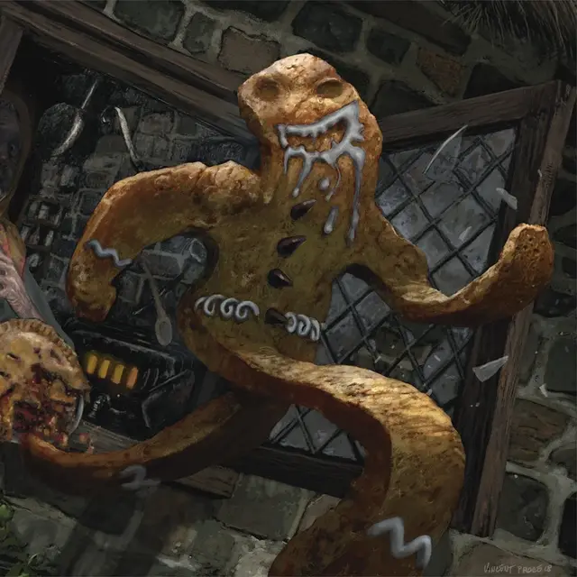

Пряничный человечек
Gingerbrute
Крошечный Конструкт, хаотично-злой

Класс Доспеха 14
Хиты 18 (4к4 + 8)
Скорость 60 футов
| мод | спас | ||
|---|---|---|---|
| СИЛ | 13 | +1 | +1 |
| ЛОВ | 18 | +4 | +4 |
| ТЕЛ | 14 | +2 | +2 |
| мод | спас | ||
|---|---|---|---|
| ИНТ | 7 | −2 | −2 |
| МДР | 10 | +0 | +0 |
| ХАР | 12 | +1 | +1 |
Навыки Акробатика +6, Атлетика +3
Уязвимость к урону дробящий
Иммунитет к состояниям истощение
Чувства пассивное Восприятие 10
Языки один язык, известный его создателю
Опасность 1/2 (100 опыта)
Бонус мастерства +2
Особенности
Не поймаешь. Пряничный человечек с преимуществом совершает любые проверки характеристик или спасброски, совершаемые, чтобы избежать или окончить состояние схваченный.
Сладкая победа. Как только пряничный человечек уничтожен, существо может действием съесть все его останки и получить 5 временных хитов. Останки рассыпаются через 24 часа, если их не съесть.
Действия
Мультиатака. Пряничный человечек совершает две атаки Вилкой, две атаки Жевательной рогаткой или по одной атаке каждым.
Вилка. . Рукопашная атака оружием: +6 к попаданию, досягаемость 5 фт., одна цель. Попадание: 6 (1к4 + 4) колющего урона.
Жевательная рогатка. . Дальнобойная атака оружием: +6 к попаданию, дистанция 30/120 фт., одна цель. Попадание: 6 (1к4 + 4) дробящего урона.
Описание
«В итоге, флакон без этикетки оказался не ванильным экстрактом».
— Тодвин Мэллоу, ныне нищий пекарь
Пряничные человечки, испеченные в дебрях Элдраина или приготовленное из выращенных там ингредиентов, имеют обыкновение жить собственной жизнью. Этих конструктов, известных еще как имбирные звери, трудно обнаружить.
Когда неудачливый пекарь случайно создает пряничного человечка, тот вызывает хаос на кухне, а затем возвращается в дикую местность, туда откуда произошли его основные ингредиенты. Многие ведьмы Данбарроу [dunbarrow Witch] намеренно создают пряничных человечков, придавая им форму солдат (иногда с помощью настоящих взбитых сливок), защищающие их зловещие котлы.
Та же самая магия, которая оживляет пряничного человечка, делает его еще и очень вкусным. Те, кто съели пряничного человечка, говорят, что ощущают прилив энергии, как будто бы съели много сахара.